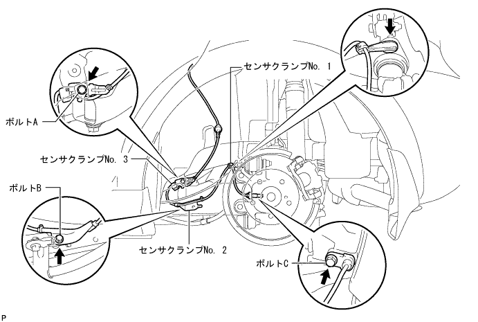
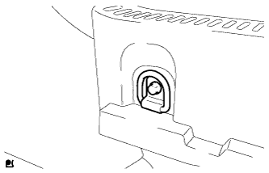

Speed Sensor Rear LH (4WD) Installation |
| 1. Install Rear Axle Hub & Bearing Assembly LH |
)| 2. Install Rear Disc |
 |
) Align the matchmarks on the disc and axle hub, and install the disc.
| 3. Install Rear Disc Brake Caliper Assembly LH |
 |
Install the rear disc brake caliper assembly LH with the 2 bolts.
| 4. Connect Parking Brake Cable Assembly NO.3 |
 |
Pass parking brake cable assembly No.3 through the guide of the rear disc brake cylinder assembly LH.
 |
Connect the cable end to the operating lever of the rear disc brake cylinder assembly LH.
| 5. Install Parking Brake Lever Protector |
 |
Install the parking brake lever protector to the parking brake cable assembly No.3.
| 6. Install Rear Axle Shaft Nut LH |
Using a socket wrench (30mm), install a new hub nut.
| 7. Inspect Rear Axle Hub & Bearing Assembly Axial Play |
 |
Using a dial indicator, check the bearing axial play near the inner circumference (flange) of the axle hub.
| 8. Inspect Rear Axle Hub & Bearing Assembly Runout |
 |
Secure the rear disc with the hub nuts.
Using a dial indicator, inspect the runout at 10mm inside the outer edge of the rear disc.
| 9. Install Rear Axle Shaft Nut LH |
 |
Using a chisel and hammer, stake the rear axle shaft nut.
| 10. Install Speed Sensor Rear LH |
Install the rear speed sensor LH to the knuckle with bolt C.

Install the sensor clamp No.1 to the elongated hole of the trailing arm.
Set the sensor clamp No.2 on the trailing arm bracket and install it with bolt B.
Set the sensor clamp No.3 on the body and install it with bolt A.
 |
Install the grommet.
Connect the speed sensor connector.
| 11. Install Rear Tire |
| 12. Install Deck Trim Side Panel Assembly LH |
)| 13. Install Luggage Hold Belt Striker Assembly (LH Side Installation Position) |
| 14. Install Room Light Assembly NO.2 |
 |
Connect the connector.
Engage the claws to install room light assembly No.2.
| 15. Install Rear Seat Side Garnish LH |
)| 16. Install Rear Seatback Hinge Sub-assembly (LH Side Installation Position) |
| 17. Install Deck Trim Cover Rear |
 |
Engage the 10 claws to install the deck trim cover rear.
| 18. Install Luggage Hold Belt Striker Assembly (Rear Side Installation Position) |
 |
Install the trunk (luggage compartment) hold belt striker with the bolt.
| 19. Install Deck Floor Box LH |
 |
Install the deck floor box LH with the 2 nuts.
| 20. Install Deck Floor Box RH |
 |
Insert the guide.
Install the deck floor box RH with the 2 nuts.
| 21. Install Rear Floor Mat Rear |
 |
Install the rear floor mat rear.
| 22. Install Package Tray Trim Panel Assembly |
 |
Engage the package tray trim panel assembly with the 2 pins.
Connect the 2 suspenders to the package tray trim garnish hooks, and install the package tray trim panel assembly.
| 23. Install Rear Door Opening Trim Weatherstrip LH |
 |
Align the paint mark (yellow) on the weatherstrip with the arrow on the body side shown in the illustration, and install the rear door opening trim weatherstrip LH.
| 24. Install Rear Door Scuff Plate LH |
)| 25. Install Rear Seat Assembly LH |
 |
Set the rear seat assembly LH in the vehicle, and install the 2 rear side bolts in the order inner → outer.
 |
Raise the seatback, and install the 2 front side bolts of the rear seat assembly LH in the order inner → outer.
| 26. Install Rear Seat Cushion Hinge Cover NO.2 |
 |
Engage the 4 claws to install the rear seat cushion hinge cover NO.2.
| 27. Install Rear Seat Cushion Hinge Cover NO.1 |
 |
Engage the 4 claws and install the rear seat cushion hinge cover NO.1.
| 28. Install Rear Seat Headrest Assembly (LH Seat Position) |
| 29. Connect Battery Negative Terminal |
| 30. Inspect Test Mode (Speed Sensor Circuit) |
)| 31. Check and Clear DTCs |
)| 32. Setting Procedure When Disconnecting/Reconnecting Battery Terminal |
)| 33. Adjust Rear Wheel Alignment |
)